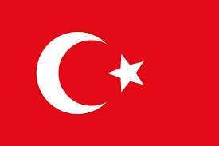
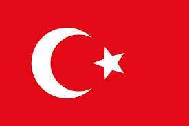
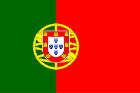
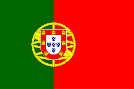

La Primera Guerra Mundial, también conocida como la Gran Guerra, fue un conflicto internacional que se desarrolló entre 1914 y 1918, involucrando a potencias de diferentes continentes y marcando el primer gran conflicto del siglo XX. Esta guerra quedo dividida en 2 bandos, los cuales fueron las potencias Centrales y las potencias de Entente y cada bando tuvo maquinaria distinta en el desalloro de la guerra.
Las potencias centrales
Las potencias centrales estaban conformadas por Alemania, Austria-Hungría, Imperio otomano, Bulgaria y Turquía.

 


Las potencias de la Entente
Las potencias de la Entente estaban conformadas por Gran Bretaña, Francia, Rusia Imperial, Italia, Grecia, Portugal, Rumania, Estados Unidos, Japón y Serbia.


 



Durante la primera guerra mundial las potencias de la entente contaban con una limitada variedad de armas de artillería al igual que su enemigo, pero esto no quiere decir que no las poseian, la artilleria era la misma con sus adbbersarios, entre las más destacadas tenemos:
Armas Usadas en la Primera Guerra Mundial

Rifle de Infantería
Ametralladora

Artillería Pesada

Gas Mostaza
Lanzallamas

Tanque de guerra

Granadas de Mano
Bayoneta

Avión de Combate

Submarino U-Boat
ARTILLERIA UTILIZADA DURANTE LA SEGUNDA GUERRA MUNDIAL
LA SEGUNDA GUERRA MUNDIAL
La Segunda Guerra Mundial fue un conflicto global que se desarrolló entre 1939 y 1945, marcado por la invasión alemana de Polonia y la posterior expansión del conflicto a nivel mundial, resultando en el mayor número de muertes en la historia. Esta guerra quedo dividida en 2 bandos, los cuales fueron los aliados y las potencias del eje y cada bando tuvo maquinaria distinta en el desalloro de la guerra.
Los Aliados
Los Aliados estaban conformadas por Francia, Reino Unido, Estados Unidos, Unión Soviética, China, Polonia, Noruega, Dinamarca, Bélgica y Luxemburgo.


Durante la segunda guerra mundial las aliados contaban con una grande y extensa variedad de armas de artillería, esto dependia mucho del pais en elque pelearan y es de resaltar que a fuerza de artilleria era meno que la de sus enemigos, ya que las potencias del eje poseian más avanzadas fuerzas en artilleria y este fue uno de los factores por los cuales se le dificulto a los aliados derrocar el regimen Nazi, entre las más destacadas de la fuerza de los aliados tenemos: